조경기사 (2019-09-21 기출문제)
1과목: 조경사
1. 다음 중 동양사상의 일반적인 특징으로 가장 거리가 먼 것은?
- 천지인의 조화를 꾀하였다.
- 자연과 인간이 융합적이다.
- 분석적이며 물질 중심적이다.
- 전체주의적이며 정신주의적이다.
(정답률: 84%)

2. 다음 설명에 적합한 대상은?
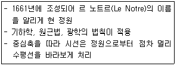
- 보볼리원
- 벨베데레원
- 보르 뷔 콩트
- 베르사이유 정원
(정답률: 78%)
3. 일본의 헤이안, 가마쿠라 시대 때 조영된 대상과 연못의 명칭 연결이 틀린 것은?
- 대각사-대택지
- 모월사-대천지
- 금각사-황금지
- 평등원-아(阿)자지
(정답률: 49%)
4. 영국 자연풍경식 조경가 중 “자연은 직선을 싫어한다.”라는 말을 신조로 삼고 있었던 사람은?
- 켄트(Kent)
- 스위처(Swither)
- 브라운(Brown)
- 브리지맨(Bridgeman)
(정답률: 79%)
5. 동양정원과 관련된 저서에 대한 설명으로 옳은 것은?
- 계성은 원야에서 주인(조영자)보다 장인들의 중요성을 주장하였다.
- 산림경제 복거(卜居)편에는 수목 식재방법이 소개된다.
- 양화소록에는 조선 시대 정원식물의 특성과 번식법, 화분의 관리법 등이 소개된다.
- 홍만선(1643~1715)은 임원경제지라는 농가 생활에 필요한 백과전서를 소개했다.
(정답률: 67%)
6. 근대 조경의 아버지라고 불리는 옴스테드(F.L.Olmsted)의 작품 및 프로젝트가 아닌 것은?
- Greensward Plan
- Birkenhead Park
- Back Bay Fens Plan
- Wold's Columbian Exposition
(정답률: 76%)
7. 한국정원에 관한 옛 기록 대동사강에 나오는 고조선 시대 노을왕(魯乙王)과 관련된 내용은?
- 유(囿)
- 누대(樓臺)
- 도리(桃李)
- 신산(神山)
(정답률: 69%)
8. 메가론(Megaron)이라 불리는 중정 형태가 등장한 시대는?
- 고대 로마
- 고대 이집트
- 고대 그리스
- 고대 메소포타미아
(정답률: 60%)
9. 다음 중 세부적 기교, 강렬한 대비효과, 호화로움 그리고 역동성 등의 특성이 나타난 조경 양식은?
- 로코코(rococo) 조경
- 바로크(baroque) 조경
- 낭만주의(romanticism) 조경
- 노단건축식(terrace-dominant architectural style) 조경
(정답률: 77%)
10. 자연사면을 수평면으로 처리한 것이 아니라 인공적인 성토작업을 통하여 축조한 계단식 후원은?
- 경복궁의 교태전 후원
- 창덕궁의 낙선재 후원
- 전라남도 담양군의 소쇄원
- 창덕궁의 연경당 선향재 후원
(정답률: 77%)
11. 다음 중 중국 진(秦)나라 시대의 정원은?
- 난지궁
- 서효원
- 어숙원
- 태액지원
(정답률: 64%)
12. 조선 시대 읍성의 공간 구조적 구성 요소들 가운데 제례공간이 아닌 곳은?
- 여단
- 향청
- 사직단
- 성황사
(정답률: 47%)
13. 고대 로마 개인주택에서 5점형 식재나 실용원이 꾸며진 장소는?
- 아트리움(Atrium)
- 지스터스(Xystus)
- 페리스틸리움(Peristylium)
- 클로이스터 가든(Cloister Garden)
(정답률: 63%)
14. 영국 르네상스 시대의 튜더, 스튜어트 왕조 때 정형식 정원의 특징이라고 볼 수 없는 것은?
- 축산(mounding)
- 노트(knot)의 도입
- 몰(mall)과 대로(grand anenue)
- 정방형 테라스의 설치
(정답률: 53%)
15. 이도헌추리(離島軒秋里)의 축산정조원(築山庭造傳)에서 정원(庭園)의 종류로 구분한 것이 아닌 것은?
- 진(眞)
- 초(草)
- 원(園)
- 행(行)
(정답률: 49%)
16. 일본 다정(茶庭)양식의 전형적 특징이 아닌 것은?
- 심신을 정화하기 위해 준거(蹲踞:쓰꾸바이)를 배치하였다.
- 조명과 장식의 목적으로 석등(石燈)을 설치하였다.
- 연못과 섬을 조성하여 다실(茶室)과 연결하였다.
- 다실에 이르는 통로인 노지(露地)는 다실과 일체된 공간으로 구성되었다.
(정답률: 53%)
17. ‘거울의 방→물 화단→Latona 분수→타피 베르→아폴로분천’으로 이어지도록 조성된 공간 특성을 보이는 곳은?
- 데스테장(Villa d'Este)
- 알함브라(Alhambra)궁
- 베르사이유(Versailles)궁
- 폰덴블로우(Fontainebleau)성
(정답률: 61%)
18. 주렴계의 애련설이 서술된 연꽃의 의미는?
- 은일자(隱逸者)를 상징
- 부귀자(富貴者)를 상징
- 군자(君子)를 상징
- 극락의 세계를 상징
(정답률: 71%)
19. 다음 중 사찰에 1탑 3금당식 유형이 나타나지 않는 것은?
- 신라 분황사
- 신라 황룡사지
- 고구려 청암리 절터(금강사)
- 백제 익산 미륵사지
(정답률: 65%)
20. 제1노단의 정방형 못 가운데 몬탈토(Montalto) 분수가 있는 곳은?
- 란테장(Villa Lante)
- 데스테장(Villa d'Este)
- 파르네제장(Villa Famese)
- 피렌체의 보볼리원(Giardino Boboli)
(정답률: 70%)
2과목: 조경계획
21. 경사도별 지형 특성(시각적 느낌, 용도, 공사의 난이도 등)을 설명한 것으로 적합하지 않은 것은?
- 4% 이하 : 활발한 활동, 별도의 절ㆍ성토 없이 건물 배치 가능
- 4~10% : 평탄하고, 소극적인 행위와 활동, 절ㆍ성토 작업을 통한 건물과 도로의 배치 가능
- 10~20% : 가파르고, 언덕을 이용한 운동과 놀이에 적극 이용, 편익시설 배치 곤란
- 20~50% : 테라스 하우스, 새로운 형태의 건물과 도로의 배치 기법이 요구됨
(정답률: 53%)
22. 공공디자인으로서 가로시설물을 계획할 때 고려할 요소가 아닌 것은?
- 형태와 이미지의 통합
- 재료와 규격의 통합
- 내용 및 콘텐츠의 통합
- 시설과 단위공간의 통합
(정답률: 46%)
23. 「도시ㆍ군계획시설의 결정ㆍ구조 및 설치기준에 관한 규칙」에 의한 도시ㆍ군계획시설 중 분류가 ‘공간시설’에 포함되지 않는 것은?
- 광장
- 공원
- 유원지
- 주차장
(정답률: 60%)
24. 단지설계 및 주택설계를 함에 있어서 에너지를 절약할 수 있는 설계안이 많이 제시되고 있는데, 여기서의 주요한 고려 사항으로 가장 거리가 먼 것은?
- 태양열의 최대한 이용
- 실내식물의 도입
- 겨울바람의 차단
- 여름바람의 통과
(정답률: 77%)
25. 다음 중「자연환경보전법」에 대한 설명으로 틀린 것은?
- 환경부장관은 전국의 자연환경보전을 위한 자연환경보전기본계획을 10년마다 수립하여야 한다.
- 환경부장관은 관계 중앙행정기관의 장과 협조하여 생태ㆍ자연도에서 1등급 권역으로 분류된 지역과 자연상태의 변화를 특별히 파악할 필요가 있다고 인정되는 지역에 대하여 2년마다 자연환경을 조사할 수 있다.
- 환경부장관은 자연생태ㆍ경관을 특별히 보전할 필요가 있는 지역을 생태ㆍ경관보전지역으로 지정할 수 있다.
- 생태ㆍ지연도는 5만분의 1 이상의 지도에 실선으로 표시하여야 한다.
(정답률: 59%)
26. 개인적 공간(personal space)의 기능과 가장 거리가 먼 것은?
- 방어(protection)
- 공공영역의 확보
- 정보교환(communication)
- 프라이버시(privacy) 조절
(정답률: 62%)
27. 조경계획 과정에서 동선계획은 토지이용 상호 간의 이동을 다루는 중요한 계획요소이다. 이에 대한 계획기준으로 적절한 것은?
- 통행량이 많은 곳은 짧은 거리를 직선으로 연결하는 것이 바람직하다.
- 주거지와 공원 등에서는 격자형 패턴이 효과적이다.
- 쿨데삭(Cul-de-sac)은 통과교통 구간에 적합하다.
- 다양한 행위가 발생하는 곳은 복잡한 동선 체계로 한다.
(정답률: 62%)
28. 주택정원의 기능 분할(zoning)은 크게 전정(前庭), 주정(庭), 후정(後庭) 및 작업(作業)공간으로 나눌 수 있다. 다음 중 후정을 설명하고 있는 것은?
- 가족의 휴식이 단란하게 이루어지는 곳이며, 가장 특색 있게 꾸밀 수 있는 장소이다.
- 장독대, 빨래터, 건조장, 채소밭, 가구집기, 수리 및 보관 장소 등이 포함될 수 있다.
- 실내 공간의 침실과 같은 휴양공간과 연결되어 조용하고 정숙한 분위기를 갖는 공간이다.
- 바깥의 공적(公的)인 분위기에서 주택이라는 사적(私的)인 분위기로 들어오는 전이공간이다.
(정답률: 69%)
29. 관련 규정에 따라 ‘명예습지생태안내인’의 위촉기간은 얼마로 하는가?
- 1년
- 2년
- 3년
- 5년
(정답률: 54%)
30. 토양에 대한 설명으로 틀린 것은?
- 토성(soil texture)은 토양의 개략적인 성질을 나타내는 것이다.
- 직경이 0.⑤~0.002mm인 토양입자는 미사로 구분한다.
- 토성분류는 자갈, 미사, 점토의 구성비로 나타낸다.
- 토양단면은 유기물층, 용탈층, 집적층, 무기물층, 암반 등으로 구분한다.
(정답률: 57%)
31. 조경가의 역할이 주어진 장소의 단순한 미화 작업이 아니라 생존을 위한 설계, 지구의 파수꾼이라는 측면의 영역으로 확대한 생태적 계획방법을 수립한 사람은?
- 에크보(G.Eckbo)
- 헬프린(L.Halprin)
- 맥하그(I.McHarg)
- 옴스테드(F.Olmsted)
(정답률: 64%)
32. 「도시공원 및 독지 등에 관한 법률」에서 구분하는 녹지의 유형이 아닌 것은?
- 경관녹지
- 생산녹지
- 완충녹지
- 연결녹지
(정답률: 58%)
33. 어린이놀이터의 놀이시설 배치 시 고려할 사항으로 거리가 먼 것은?
- 인접 놀이터와 기능을 달리하여 장소별 다양성을 부여한다.
- 놀이시설은 어린이의 안전성을 먼저 고려하여야 하며, 높이가 급격하게 변화하지 않게 설계한다.
- 놀이시설은 지역여건과 주변환경을 고려하여 놀이터에 따라 단위놀이시설ㆍ복합놀이 시설 등을 조화되게 구분하여 설치한다.
- 놀이공간 안에서 어린이의 놀이와 보행동선의 연계를 위해 주보행동선 주변에 가급적 시설물을 배치한다.
(정답률: 79%)
34. 「도시공원 및 녹지 등에 관한 법률」시행규칙상 면적 12,000m2의 도심 공지에 체육공원을 조성하여 한다. 최대 공원시설면적에 설치할 수 있는 운동시설 최소면적은 얼마인가?
- 7,200m2
- 6,000m2
- 4,300m2
- 3,600m2
(정답률: 44%)
35. 「국토의 계획 및 이용에 관한 법률」시행령에 따른 ‘경관지구’의 분류에 해당되지 않는 것은?
- 자연경관지구
- 특화경관지구
- 생태경관지구
- 시가지경관지구
(정답률: 34%)
36. 다음 그림과 같은 대지에 건축물을 건축하고자 한다. 층수는 지하는 1층(200m2), 지상은 5층으로 하고자 할 경우 최대한 건축할 수 있는 연면적은? (단, 건폐율은 50%, 용적률은 200%이다.)
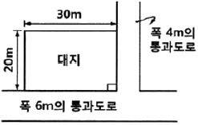
- 1,196m2
- 1,200m2
- 1,396m2
- 1,695m2
(정답률: 35%)
37. 인간행태 연구를 위한 현장관찰 방법의 설명으로 틀린 것은?
- 행위자의 의도를 인터뷰 없이 정확하게 알 수 있다.
- 시간의 흐름에 따라 변하는 연속적인 행태를 연구할 수 있다.
- 연구자의 출현이 피관찰자의 행태에 영향을 미칠 수 있다.
- 환경적 상황에 따른 행태의 해석이 용이하다.
(정답률: 74%)
38. 조경계획을 할 경우 지형도에서 파악이 곤란한 것은?
- 자연배수로
- 경사도
- 유역(流域)
- 식생현황생태
(정답률: 71%)
39. 고속도로 조경 시 명암순응식재가 가장 필요한 곳은?
- 휴게소
- 인터체인지
- 교량
- 터널 입구
(정답률: 77%)
40. 식재계획에 대한 설명으로 옳지 않은 것은?
- 식재계획은 구역 내 식생의 보호, 관리, 이용 및 배식에 관한 것을 포함한다.
- 계획구역의 기후적 여건에서 생장이 가능한지를 검토한 후 수종을 선택한다.
- 생태적 측면뿐만 아니라 기능적 측면도 고려하여 수종을 선택한다.
- 정형식 패턴은 기념성이 높은 장소에 부적합하다.
(정답률: 77%)
3과목: 조경설계
41. 포장설계를 하는 데 있어서 고려해야 할 바람직한 설계 기준에 해당되는 것은?
- 시선유도에는 넓은 스케일의 포장패턴을 사용한다.
- 포장의 변화를 이용하여 도로의 속도감을 표현한다.
- 편의성, 내구성, 경제성, 재생성을 기준으로 한다.
- 교통하중, 동결심도, 토질 등의 사항을 고려해야 한다.
(정답률: 60%)
42. 조경설계기준상의 환경조경시설 관련 배치 설계 등에 관한 설명으로 틀린 것은?
- 조형물 전체를 감상하기 위해서는 최소 시설물 높이의 2~3배의 관람 거리를 확보한다.
- 기념비형 조형물은 설계대상 공간의 어귀ㆍ중앙의 광장과 같이 넓은 휴게공간의 포장 부위 또는 녹지에 배치한다.
- 인지도와 식별성이 낮은 곳을 선정하여 조형 시설의 도입에 따른 이미지가 부각되지 않도록 배치한다.
- 환경조성시설은 인간성 회복에 기여하고 주변 환경의 지속성을 높일 수 있도록 설계한다.
(정답률: 72%)
43. 다음 입체도를 제3각법으로 나타낸 3면도 중 옳게 투상한 것은?
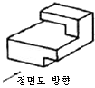
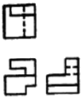
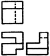
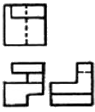
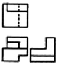
(정답률: 56%)
44. 다음 경관분석을 위한 기초자료 종합 시 가중치(加重値) 적용 방법 중 가장 객관적 이라고 볼 수 있는 것은?
- 회귀분석법(回歸分析法)
- 도면결합법(圖面結合法)
- 여러 명의 전문가 의견을 평균하는 방법
- 모든 요소에 동일한 가중치를 적용하는 방법
(정답률: 44%)
45. 흰색 배경의 회색보다 검음색 배경의 회색이 더 밝게 보이는 것은?
- 보색대비
- 명도대비
- 색상대비
- 채도대비
(정답률: 70%)
46. 산림경관 중 인상적이고 명확한 형태의 경관으로 관찰자나 시행자에게 중요한 안내자가 되는 동시에 경관의 지표(指標)가 되는 경관은?
- 전경관
- 지형경관
- 위요경관
- 초점경관
(정답률: 38%)
47. 조경공간에서 휴게시설의 퍼걸러(pergoal) 설계기준이 옳지 않은 것은?
- 기둥과 들보와 보로 구성되며, 햇빛을 막아 그늘을 제공하는 구조물로서 그늘시렁이라고도 한다.
- 평면 행태는 직사각형 및 정사각형을 기본으로 하며, 공간성격에 따라 원형ㆍ아치형ㆍ부정형으로 할 수 있다.
- 조형성이 뛰어난 그늘시렁은 시각적으로 넓게 조망할 수 있는 곳이나 통경선(vista)이 끝나는 곳에 초점요소로서 배치할 수 있다.
- 규격은 공간규모와 이용자의 시각적 반응을 고려하여 결정하며, 일반적으로 길이보다 높이가 길도록 한다.
(정답률: 63%)
48. 설계자의 창의성을 사고(思考)의 창의성과 표현(表現)의 창의성으로 구분한다면 사고의 창의성과 가장 관계가 깊은 것은?
- 프로그램 작성
- 기본계획 작성
- 기본설계 작성
- 실시설계 작성
(정답률: 54%)
49. 기본적인 수(手)작업 제도상의 주의 사항으로 틀린 것은?
- 축척자는 선을 그릴 때 사용하지 않는다.
- T자를 제도판으로부터 들어낼 때는 머리 부분을 울러 옮긴다.
- 제도용 연필은 그리는 방향으로 당기듯이 회전하면서 그려 나간다.
- 삼각자를 활용해서 수직선을 그릴 때는 위에서 아래로 그려 나간다.
(정답률: 64%)
50. 존 딕슨 헌트(John Dixon Hunt)가 자연을 분류한 가지 유형에 포함되지 않는 것은?
- 정원(garden)
- 이상향(utopia)
- 원생자연(Wild nature)
- 문화자연(cultural nature)
(정답률: 52%)
51. 다음 그림은 서로 다른 모양과 크기의 체크무늬로 이루어진 사다리꼴 그림으로 받아들이지 않고 같은 크기의 정방형 체크무늬 타일바닥이 비스듬하게 기울어진 것으로 받아들이려는 경향이 있다. 이를 행태주의 심리학(Gestalt Psychology)에서는 무슨 원리로 설명하는가?
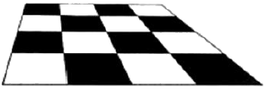
- 단순성의 원리
- 교차조합의 원리
- 모호성의 원리
- 전경배경의 원리
(정답률: 52%)
52. 입체의 각 방향의 면에 화면을 두어 투영된 면을 전개하는 투상도법은?
- 사투상
- 정투상
- 투시투상
- 축측투상
(정답률: 52%)
53. 다음 중 질감(texture)의 설명으로 적합하지 않은 것은?
- 수목의 질감은 잎의 특성과 구성에 있다.
- 옷감의 질감은 실의 특성과 직조 방법에 있다.
- 거친 질감은 관찰자에게 접근하는 느낌을 주기 때문에 실제거리보다 가깝게 보인다.
- 질감은 주로 촉각에 의해서 지각되며 자세히 보면 행태의 집합보다는 부분적 느낌의 종합이다.
(정답률: 68%)
54. 다음 색입체에서 가장 채도가 높은 빨강의 순색은?
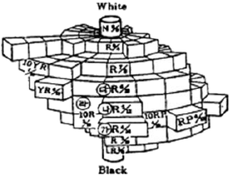
- ㉮ R4/14
- ㉯ R5/12
- ㉰ R6/10
- ㉱ 10R5/10
(정답률: 57%)
55. 조경에서 배수시설 설계와 관련된 설명으로 옳지 않은 것은? (단, 조경설계기준을 적용한다.)
- 배수 계통은 직각식, 차집식, 선형식, 방사식, 집중식 등이 있다.
- 배수의 계통 및 방식은 최소 우수배수량을 합류식으로 산출하여 정한다.
- 개거는 토사의 침전을 줄이기 위해서 배수 기울기를 1/300 이상으로 한다.
- 하수도에 방류하는 경우에는 빗물과 오수를 동일 관거로 배제하는 합류식과 분리하는 분류식으로 나눈다.
(정답률: 46%)
56. 축척이 1/500인 도면에서 길이가 3cm되는 선은 실제로는 얼마가 되는가?
- 3cm÷500
- 500÷3cm
- 500×3cm
- 1÷(500×3cm)
(정답률: 66%)
57. 일소점 투시도상에서 사람의 눈높이에 위치하며, 선들이 모이는 점은?
- V.P(Vanishing Point)
- P.S(Point of Sight)
- S.P(Stand Point)
- F.P(Foot Point)
(정답률: 54%)
58. 다음 그림에서 각 선의 명칭으로 옳은 것은?
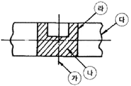
- ㉮ 경계선
- ㉯ 파단선
- ㉰ 가상선
- ㉱ 외형선
(정답률: 62%)
59. “교목들을 건물의 서편에 배치시켜 늦은 오후의 강한 햇살이 실내로 들어오는 것을 차단하였다.”는 물리ㆍ생태적 분석 요소 중 어느 것이 설계에 반영된 결과인가?
- 지형
- 기후
- 토양
- 식생
(정답률: 57%)
60. 물리적 공간을 한정하여 공간규모를 결정하는 옥외 공간 한정 요소로 적당하지 않은 것은?
- 천장면
- 장식면
- 바닥면
- 벽면
(정답률: 61%)
4과목: 조경식재
61. 수목이식을 위한 굴취공사 때 필요로 하는 재료와 가장 거리가 먼 것은?
- 식물생장조절제
- 결속ㆍ완충재
- 가지주재
- 증산촉진제
(정답률: 67%)
62. 다음은 온대중부지역의 천이단계를 나타낸 것이다. (A)안의 단계에 해당하는 수종으로 적합한 것은?
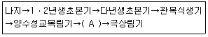
- 신갈나무
- 곰솔
- 때죽나무
- 능수버들
(정답률: 56%)
63. 다음 중 생태학에서 분류하는 천이에 해당되지 않는 것은?
- 1차 천이
- 퇴행 천이
- 2차 천이
- 3차 천이
(정답률: 62%)
64. 인공지반(옥상 등)의 식재 환경에 대한 설명으로 옳지 않은 것은?
- 지하 모관수의 상승작용이 없다.
- 잉여수 때문에 양분 유실 속도가 빠르다.
- 토양 미생물의 활동이 미약하다.
- 토양 온도의 변화가 거의 없다.
(정답률: 63%)
65. 군집의 발전 과정에서 나타나는 여러 현상에 관한 설명으로 틀린 것은?
- 비생물적 유기물질은 증가한다.
- 개체의 크기는 점점 커지는 경향이 있다.
- 물리적 환경과의 평형상태를 극상이라고 한다.
- 천이는 군집 변화 과정을 내포한 방향성 없는 변화이다.
(정답률: 69%)
66. 다음 중 이식이 어려운 수종으로 구성된 것은?
- 은행나무, 사철나무
- 버드나무, 계수나무
- 느티나무, 명자나무
- 자작나무, 호두나무
(정답률: 54%)
67. 지피식물의 이용 목적과 거리가 가장 먼 것은?
- 토양의 침시 방지
- 공간의 장식적 역할
- 미기후의 완화, 조절
- 정원수 생육 촉진
(정답률: 68%)
68. 우리나라 산림의 수직분포 중 한대림의 자생 수종에 해당되지 않는 것은?
- 분비나무(Abies nephroIepis)
- 개서어나무(Carpinus tschonoskii)
- 눈잣나무(Pinus pumila)
- 잎갈나무(Larix olgensis)
(정답률: 48%)
69. 서양 잔디 중 난지형 잔디로 종자 번식이 비교적 잘되어 운동장에 주로 이용하는 것은?
- Bent grass
- Fesce grass
- Bermuda grass
- Kentucky bluegrass
(정답률: 55%)
70. 임해 매립지 위에 식재기반과 관련된 설명으로 옳지 않은 것은?
- 바람의 피해를 받을 우려가 있는 식재지에서는 방풍림 또는 방풍망 등을 설계한다.
- 바람에 날리는 모래로 수목의 생육 장애가 우려되는 지역에는 방사망 설계를 적용한다.
- 지하에서 염분이 상승하여 수목의 생장에 피해를 줄 어려가 있는 식재지에는 관수 시설을 도입한다.
- 준설토로부터의 염분 확산이 우려되는 곳에서는 준설토보다 작은 입자의 토양을 객토용으로 채택한다.
(정답률: 68%)
71. 우리나라의 경토(耕土)와 산림 토양의 일반적인 산도(pH) 범위는?
- 4.5미만
- 4.5~6.5
- 6.6~8.0
- 8.1~9.0
(정답률: 69%)
72. 다음 특징에 해당하는 수종은?
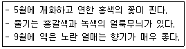
- 호두나무(Juglans regia Dode)
- 명자나무(Chaenomeles speciosa Nakai)
- 산딸나무(Berberis koreana Palib)
- 모과나무(Vhaenomeles sinensis Koehne)
(정답률: 71%)
73. 다음 수목 중 꽃의 색이 다른 하나는?
- Cornus controversa
- Cornus walteri
- Cornus officinalis
- Cornus kousa
(정답률: 48%)
74. 종 다양성에 대한 설명으로 옳지 않은 것은?
- 종 이질성을 나타낸다.
- 종들의 생태적 지위가 중복된 군집일수록 종 다양도는 높다.
- 낮은 종 다양도는 매우 복잡한 군락을 나타낸다.
- 종 다양도는 천이 초기에 증가하는 경향이 있다.
(정답률: 61%)
75. 인동덩굴(Lonicera japonica Thunb)의 특성에 대한 설명으로 틀린 것은?
- 반상록 활엽 덩굴성 관목이다.
- 잎은 마주나기하며 타원형이고 예두 또는 끝이 둔한 예두이다.
- 열매는 둥글고 지름이 7~8mm로 검은색이고 9~10월에 성숙한다.
- 줄기는 덩굴손을 이용하여 올라가고, 1년생 가지는 녹색이다.
(정답률: 40%)
76. 유전자급원(遺傳子給源)으로서의 모수(母樹)를 선정할 경우 유의해야 할 사항에 해당되는 것은?
- 열세목 중에서 선택한다.
- 유전적 형질과는 무관하다.
- 적응 양의 종자를 생산하는 개체를 남긴다.
- 바람에 의한 넘어짐에 대한 저항력이 높아야 한다.
(정답률: 54%)
77. 라운키에르(Raunkier)에 의한 식물의 생활양식의 유형이 아닌 것은?
- 다육(多肉)식물
- 초본(草本)식물
- 반지중(半地中)식물
- 일년생(一年生)식물
(정답률: 36%)
78. 양버즘나무의 특징으로 옳은 것은?
- 학명은 Platanus orientals L.이다.
- 암수한그루로 꽃은 3월 말~5월에 핀다.
- 열매는 둥글고 털이 없으며, 직경이 1CM로 6월에 2개가 성숙하여 그래 가을에 모두 탈락한다.
- 토심이 얕고 배수가 불량한 점질토양에서도 생육이 양호하며, 각종 공해에 약하고 충해에는 강하다.
(정답률: 37%)
79. 하천의 저습지 설계와 관련된 설명으로 틀린 것은?
- 저습지에는 외래식물 중 발아 및 초기생육이 우수한 초본식물을 우선 도입한다.
- 저습지는 침수빈도와 정도를 고려하여 조성하고, 식재하는 식물종을 선정한다.
- 배수가 불량하거나 물이 많이 고이는 곳에 습초지(濕草地)를 조성하여 조류 서식처가 되도록 한다.
- 도입 가능한 부유식물(ferr-floating plants)로는 좀개구리밥, 생이가래 등이 있다.
(정답률: 62%)
80. 식물이 생육하는 토양에서 답압에 의한 영향으로 옳은 것은?
- 토양이 입단(粒團)구조가 된다.
- 용적 비중이 낮아진다.
- 통수성이 낮아진다.
- 토양 통수가 빠르다.
(정답률: 55%)
5과목: 조경시공구조학
81. 다음 중 측량의 3대 요소가 아닌 것은?
- 각측량
- 면적측량
- 고저측량
- 거리측량
(정답률: 52%)
82. 건설공사표준품셈 기준에 의한 공사비 예산 내역서 작성 시 일반적인 설계서의 총액 원 단위표준 지위규칙으로 옳은 것은? (단, 지위 이하는 버린다.)
- 지위 1원
- 지위 10원
- 지위 100원
- 지위 1,000원
(정답률: 52%)
83. 토적 계산법에 대한 설명으로 틀린 것은?
- 점고법은 단면법의 일종이다.
- 등고선법은 각주공식을 응용하여 계산한다.
- 중앙단면법은 양단면평균법보다 토양이 적게 계산된다.
- 사각형분할1법보다 삼각형분할법에서 더 정확한 토양이 계산된다.
(정답률: 32%)
84. 살수관개시설의 설계 시 고려 사항에 해당되지 않는 것은?
- 관수량, 급수원의 흐름 및 압력에 의해 살수기를 선정한다.
- 어느 동일한 구역에서 살수지관의 압력 변화는 살수기에서 필요한 압력의 20% 보다는 크지 않도록 한다.
- 살수기 배치는 정삼각형보다 정사각형의 경우가 살수 효율이 좋다.
- 살수지관의 압력손실은 주관 압력의 10% 이내가 되도록 한다.
(정답률: 69%)
85. 공사 발주자가 공사발주를 위한 예정 가격을 책정하기 위한 것으로 공사비 산정의 일반적인 과정이 올바르게 연결된 것은?
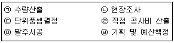
- ㉥→㉡→㉢→㉠→㉣→㉤
- ㉤→㉥→㉡→㉢→㉠→㉣
- ㉥→㉡→㉠→㉢→㉣→㉤
- ㉡→㉥→㉠→㉢→㉣→㉤
(정답률: 43%)
86. 목재의 섬유포화점(fiber saturation point)에서의 함수율은?
- 약 15%
- 약 30%
- 약 40%
- 약 50%
(정답률: 60%)
87. 식재지반 조성에 필요한 자연 상태의 사질양토 10,000m3를 현장에서 10km 떨어진 곳에서 버킷 용량 0.7m3의 유압식 백호우를 이용하여 굴착하고 덤프트럭에 적재하여 운반하고자 한다. 백호우의 시간당 작업량(m3/h)은?
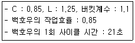
- 89.76
- 112.2
- 140.25
- 165.0
(정답률: 36%)
88. 배수지역이 광대해서 하수를 한 곳으로 모으기가 곤란할 때, 배수 지역을 여러 개로 구분하여 배수 구역별로 외부로 배관하고 집수된 하수는 각 구역별로 별도로 처리하는 배수 방식은?
- 직각식
- 선형식
- 집중식
- 방사식
(정답률: 67%)
89. 시멘트의 분말도에 관한 설명으로 틀린 것은?
- 시멘트의 분말이 미세할수록 수화반응이 느리게 진행하여 강도의 발현이 느리다.
- 분말이 과도하게 미세하면 풍화되기 쉽거나 사용 후 균열이 발생하기 쉽다.
- 시멘트의 분말도 시험으로는 체분석법, 피크노메타법, 브레인법 등이 있다.
- 분말도는 시멘트의 성능 중 수화반응, 블리딩, 초기강도 등에 크게 영향을 준다.
(정답률: 53%)
90. 다음 그림에서 같은 두 힘에 의한 A점의 모멘트 크기는?
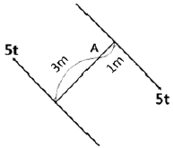
- 5tㆍm
- 10tㆍm
- 15tㆍm
- 20tㆍm
(정답률: 45%)
91. 그림과 같은 보에서 A점의 수직반력은?
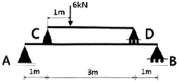
- 2.4kN
- 3.6kN
- 4.8kN
- 6.0kN
(정답률: 42%)
92. 관습적으로 정지계획 설계도 작성 시 고려할 사항으로 틀린 것은?
- 제안하는 등고선은 파선으로 표시한다.
- 계단, 광장, 도로 등의 꼭대기와 바닥의 고저를 표기하도록 한다.
- 폐합된 등고선은 정상을 표시하기 위해 점고저(spot elevation)를 적는다.
- 등고선의 수직노선 조작은 성토의 경우 높은 방향(위)에서 시작하여 내려온다.
(정답률: 55%)
93. 다음 옹벽 설계조건의 ()안에 가장 적합한 것은?
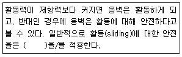
- 1.0~1.5
- 1.5~2.0
- 2.0~2.5
- 2.5~3.0
(정답률: 59%)
94. 수목식재 장소가 경관상 매우 중요한 위치일 때 사용하는 방법으로 통나무를 땅에 깊숙이 묻고 와이어로프 등으로 수목이 흔들리지 않도록 하는 수목 지주법은?
- 강관지주
- 당김줄형지주
- 매몰형지주
- 연계형지주
(정답률: 60%)
95. 다음 평판측량과 관련된 용어는?
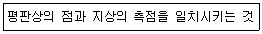
- 정준
- 표정
- 치심
- 폐합
(정답률: 39%)
96. 쇠메로 쳐서 요철이 없게 대충 다듬는 정도의 돌 표면 마무리는 무엇인가?
- 정다듬
- 잔다듬
- 도두락다듬
- 혹두기
(정답률: 44%)
97. 비탈면 구축 시 대상(帶狀) 인공뗏장을 수평 방향에 줄 모양으로 삽입하는 식생공법(植生工法)을 무엇이라고 하는가?
- 식색조공(植生條工)
- 식생대공(植生袋工)
- 식생반공(植生般工)
- 식생혈공(植生穴工)
(정답률: 31%)
98. 골재의 함수상태에 따른 중량이 다음과 같을 경우 표면수율은?
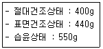
- 2%
- 10%
- 25%
- 37%
(정답률: 50%)
99. 도로의 곡선부분에 곡선장(曲線長)을 짧게 할 때 발생하는 현상으로 거리가 먼 것은?
- 도로가 절곡되어 있는 것처럼 보이므로 속도가 증가된다.
- 운전자가 핸들 조작에 불편을 느낀다.
- 곡선반경이 실제보다 작게 보여 운전상 착각을 느낀다.
- 원심 가속도의 증가로 운전경로를 이탈하기 쉽다.
(정답률: 62%)
100. 다음 중 네트워크식 공정표의 계산에 관한 설명으로 적합하지 않은 것은?
- EFT는 EST보다 크다.
- FF는 TF보다 작다.
- DF는 TF보다 크다.
- 최초작업의 EST는 0으로 한다.
(정답률: 50%)
6과목: 조경관리론
101. 솔잎혹파리가 겨울을 나는 형태는?
- 알
- 성충
- 유충
- 번데기
(정답률: 48%)
102. 공정표의 종류 중 횡선식 공정표(Gantt Chart)에서 가장 정확히 보여주는 특성은?
- 작업 진행도
- 공종별 상호관계
- 공종별 작업의 순서
- 공기에 영향을 주는 작업
(정답률: 54%)
103. 잡초 중에서 가장 많이 분포하며, 잎집과 잎몸의 이음새에는 막이 있고, 털이 밖으로 생장한 모습의 잎혀가 있으며, 잎맥이 평행한 특성을 가지는 것은?
- 화본과
- 명아주과
- 사초과
- 마디풀과
(정답률: 34%)
104. 멀칭의 효과로 가장 거리가 먼 것은?
- 토양 수분 유지
- 잡초 발생 억제
- 토양 침식 방지
- 토양 고결 조장
(정답률: 66%)
1⑤. 재해ㆍ안전대책의 설명으로 가장 거리가 먼 것은?
- 각종 재해의 복구는 재산 가치나 높은 것부터 복구한다.
- 각종 시설물은 정기적인 점검과 보수를 한다.
- 위험한 곳은 사고 방지를 위한 시설을 설치한다.
- 이용자 부주의에 의한 빈번한 사고라도 안내판 설치 등 이용지도가 필요하다.
(정답률: 72%)
106. 공원녹지 내에서 행사를 기획할 때 유의해야 할 사항이 아닌 것은?
- 행사 시설이 설치 목적에 맞을 것
- 관계 법령을 준수할 것
- 대안을 만들어 놓을 것
- 통상 이용자를 통제할 것
(정답률: 66%)
107. 가수분해의 우려가 없는 경우에 농약 원제를 물에 녹이고 동결방지제를 가하여 제제화한 제형은?
- 유제(乳劑)
- 액제(液劑)
- 수화제(水和劑)
- 수용제(水蓉劑)
(정답률: 30%)
108. 이용률이 80인 조건에서 요소(N 46%) 10kg 중 유효질소의 양은?
- 약 2.7kg
- 약 3.7kg
- 약 4.7kg
- 약 5.7kg
(정답률: 53%)
109. 공원 내 이용지도는 목적에 따라 3가지*공원 녹지의 보전, 안전ㆍ쾌적이용, 유효이용)로 구분할 수 있다. 다음 중「공원녹지의 보전」을 위한 이용지도의 대상이 되는 행위ㆍ시설은?
- 공원녹지의 손상ㆍ오손
- 공원 내의 루트, 시설의 유무 소개
- 식물ㆍ조류관찰ㆍ오리엔터링 등의 지도
- 유치원, 학교 등의 단체에 대한 활동 프로그램의 조언
(정답률: 54%)
110. 다음 설명의 ()안에 적합한 용어는?
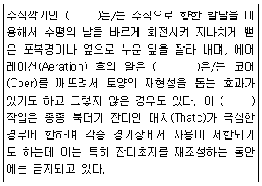
- Rolling
- Slicing
- Spiking
- Vertical mowing
(정답률: 58%)
111. 질소기아(nitrogen starvation)현상에 대한 설명으로 틀린 것은?
- 토양으로부터 질소의 유실이 촉진된다.
- 탄질률이 높은 유기물이 토양에 가해질 경우 일시적으로 발생한다.
- 미생물 상호 간은 물론 미생물과 고등식물 사이에 질소 경쟁이 일어난다.
- 미생물이 토양 중의 질소를 먼저 이용하므로 배수나 휘산에 의한 질소 손실을 막을 수 있다.
(정답률: 27%)
112. 콘크리트 옹벽이 앞으로 넘어질 우려가 있을 때 일반적으로 시행하는 공법이 아닌 것은?
- PㆍC 앵커 공법
- 압성토 공법
- 전면 부벽식 옹벽 공법
- 실링 공법
(정답률: 52%)
113. 일반적으로 조경분야의 연간 유지관리 계획에 포함하는 것은?
- 건물의 도색
- 건물의 갱신
- 공원 지역 내의 순찰
- 수목의 전정 및 잔디 깍기
(정답률: 63%)
114. 아스팔트 포장의 파손 부분을 사각형 수직으로 따내고 보수하는 공법으로, 포장이 균열되었거나 국부적 침하, 부분적 박리가 있을 때 적용하는 공법은?
- 패칭 공법
- 표면처리 공법
- 덧씌우기 공법
- 혈매 공법
(정답률: 63%)
115. 조경건설 현장의 근로재해 강도율(强度率)을 나타내는 식은?
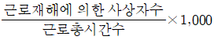
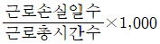
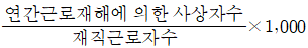
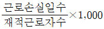
(정답률: 41%)
116. 파이토플라스마(phytoplasma)에 의한 수병(樹病)은?
- 포플러 모자이크병
- 벚나무 빗자루병
- 대추나무 빗자루병
- 장미 흰가루병
(정답률: 53%)
117. 잎과 뿌리가 없는 기생식물로서 다른 식물의 잎과 줄기를 감고 자라며 바이러스를 매개하는 것은?
- 새삼
- 으름덩굴
- 겨우살이
- 청미래덩굴
(정답률: 39%)
118. 해충의 가해 형태별 분류에서 흡즙성 해충에 해당되는 것은?
- 점받이응애
- 호두나무잎벌레
- 개나리잎벌
- 솔알락명나방
(정답률: 58%)
119. 시설 및 수목관리의 목적으로 활용되는 이동식 사다리의 안전기준으로 틀린 것은?
- 안정성이 확보되면 사다리의 길이는 제한이 없다.
- 발판의 수직간격이 25~35cm사이, 사다리의 폭은 30cm 이상인 것을 사용한다.
- 사다리의 발판에는 물결모양 등 미끄럼방지 처리가 된 것을 사용한다.
- 사다리의 상부 3개 발판 미만에서만 작업하며, 최상부 발판에서는 작업하지 않는다.
(정답률: 65%)
120. 토양을 100℃로 가열해도 분리되지 않으며, pF 7 이상인 수분은?
- 흡습수
- 결합수
- 모세관수
- 유리수
(정답률: 57%)